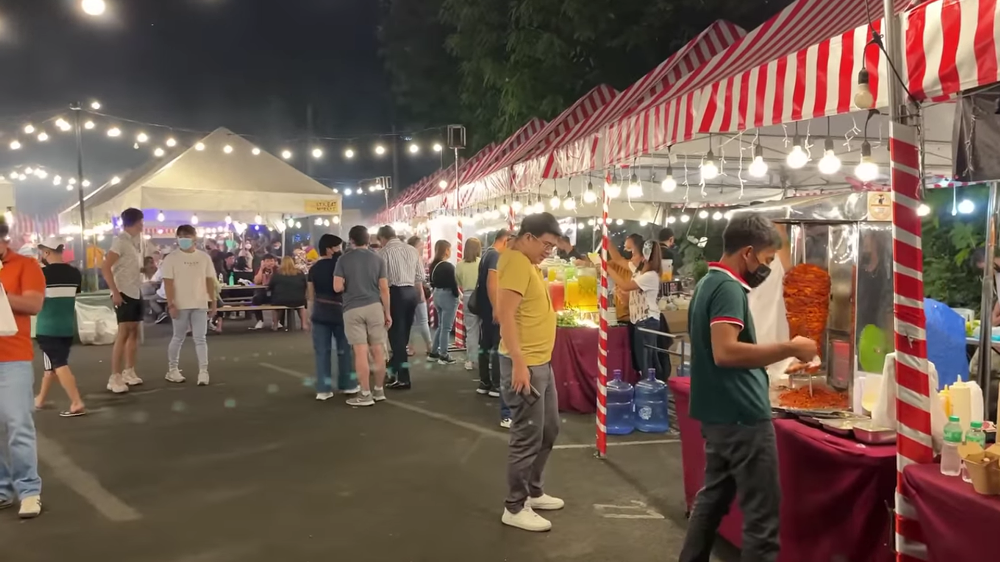
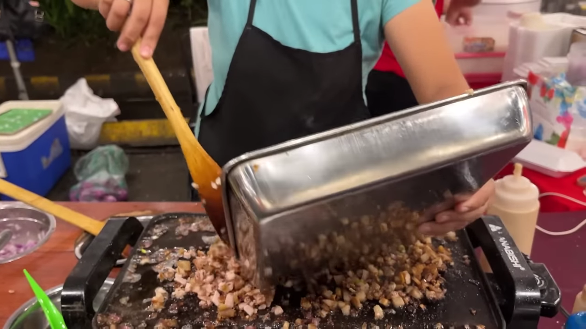
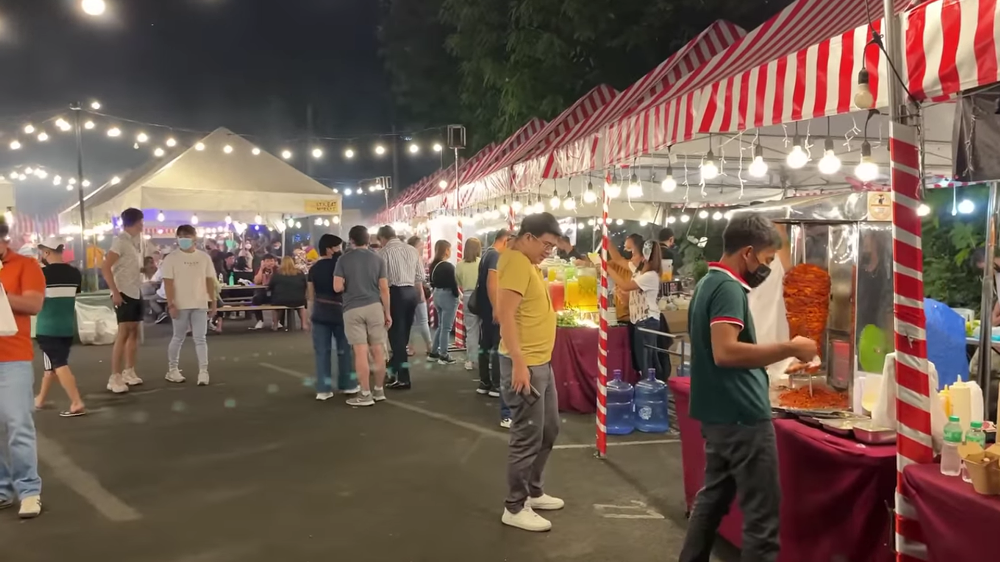
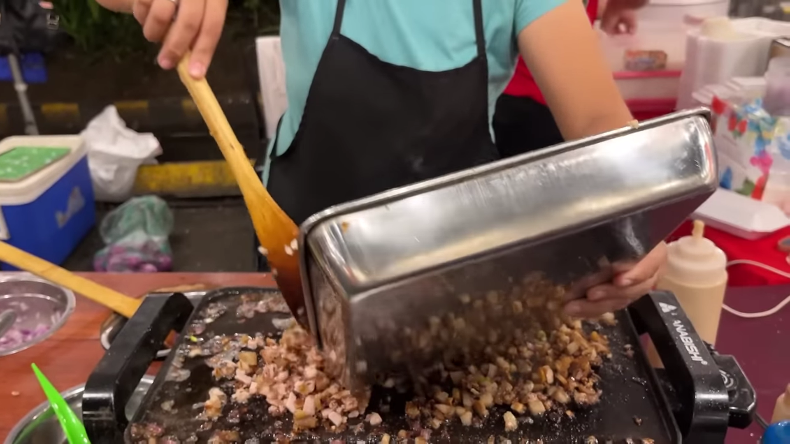

VENICE GRAND CANAL MALL STREET FOOD
Nestled amidst the grandeur of the Venice Grand Canal Mall, the street food scene beckons both locals and visitors with its tantalizing aromas and mouthwatering delights. From savory treats to sweet indulgences, the street food here offers a diverse range of flavors and textures that will satiate your cravings and leave you wanting more.
Beyond the culinary delights, the Venice Grand Canal Mall offers an atmosphere of enchantment. The stunning architecture, with its replica of Venice's iconic landmarks, creates a whimsical setting that enhances the dining experience. Immerse yourself in the ambience of the mall, enjoy the melodies of live performances, and capture Instagram-worthy moments as you savor the delicious street food.
The Venice Grand Canal Mall in Taguig City is not just a shopping destination; it's a culinary wonderland. From the savory delights of Takoyaki and Sisig to the sweet indulgence of Halo-Halo and Churros con Chocolate, every bite is a moment of culinary bliss. So, venture into the charming streets, let your taste buds guide you, and immerse yourself in the flavors and atmosphere of the Venice Grand Canal Mall street food. It's an experience that will leave you with a lasting appreciation for the diverse culinary offerings of Taguig City, Philippines.